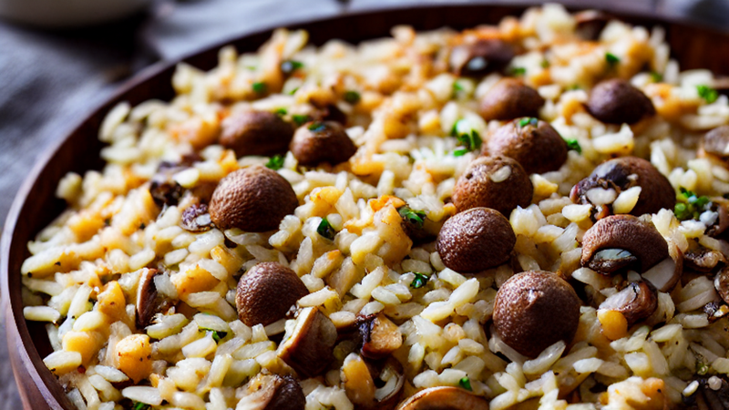
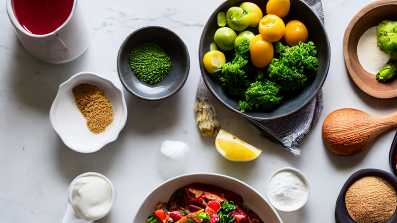
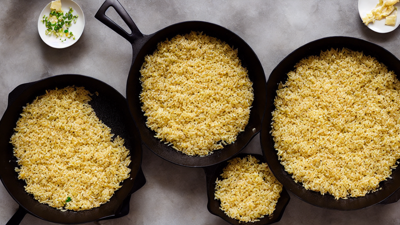
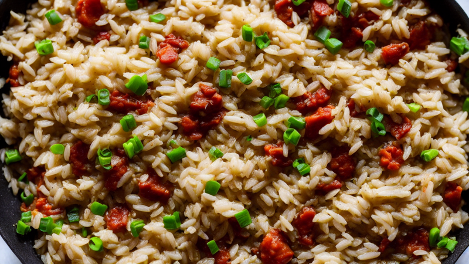
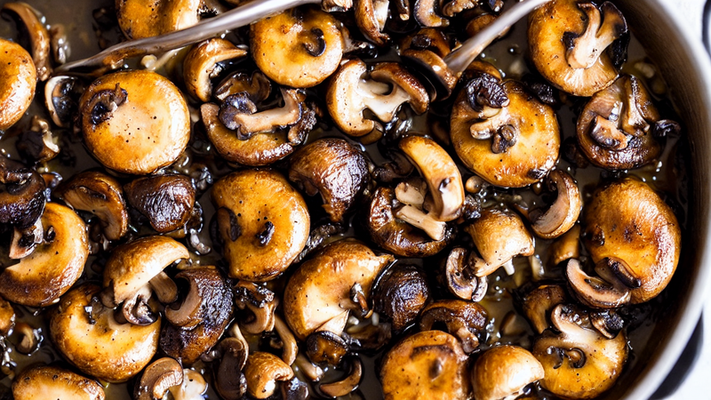
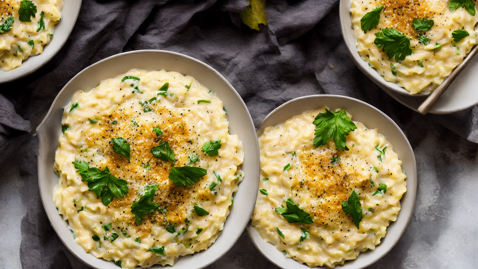
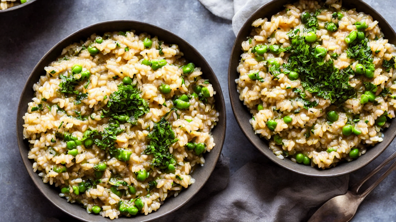

Creamy Mushroom Risotto | A Rich & Silky Comfort Food Classic
Indulge in this velvety Creamy Mushroom Risotto recipe! Perfectly balanced with Arborio rice, earthy mushrooms, and a touch of Parmesan. A cozy, creamy dish for any meal. Subscribe for more easy gourmet recipes!
Ingredients
- ing Arborio rice
- mushrooms
- onion
- garlic
- white wine
- broth
- Parmesan
- butter
Instructions

Welcome to today’s recipe! Let’s make a creamy mushroom risotto that’s rich, silky, and full of flavor.

Start by gathering Arborio rice, mushrooms, onion, garlic, white wine, broth, Parmesan, and butter.

Toast the rice in butter until slightly golden, then deglaze with white wine to unlock its flavor.

Gradually add warm broth, one ladle at a time, stirring constantly until the rice is al dente and creamy.

Add sliced mushrooms and sauté until tender, letting their earthy aroma blend with the risotto’s richness.

Finish with grated Parmesan, a splash of lemon, and a pat of butter for ultimate creaminess.

Garnish with fresh thyme and serve immediately—this dish is best enjoyed hot and fresh!